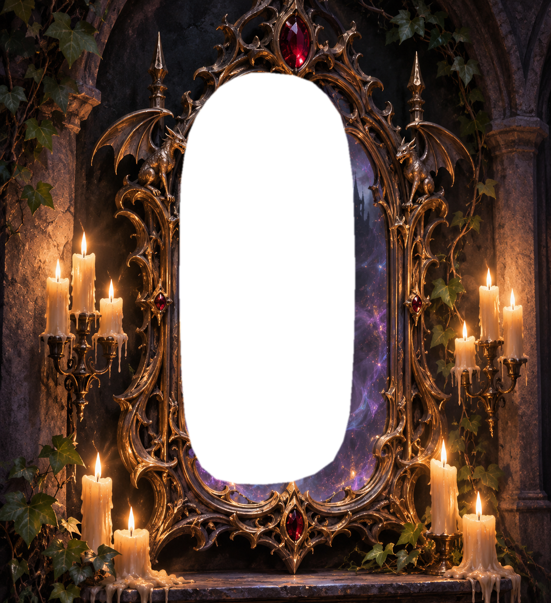

An invitation to be seen
Mirror, mirror
on the wall.
Once upon a time, mirrors were asked who was fairest.
This one asks no such thing.
Seeing you, just as you are.
The mirror is waiting.
Approach whenever you're ready.
Approach whenever you're ready.

THE MIRROR AWAITS
No judgement. No fairest of them all.
The camera runs only with your permission. Frames are processed in your browser, not uploaded or saved. The detector's files load from external hosting when you start.